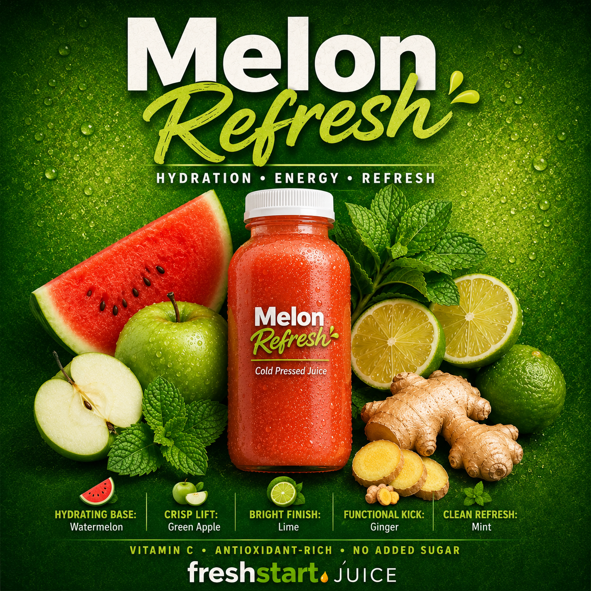

Made with intention.
Why we exist
Started in the backyard, with apples, lemons, limes and oranges we grew ourselves.
Over time, it became something more — a focus on real ingredients, small batches, and paying attention to what goes in, how it's made, and how it feels after.
Every batch is tested, refined, and dialed in until it's right. Balanced for flavor. Made for everyday energy, hydration and recovery.
When it's ready, the Founders List hears first. That's the process.
Join the List